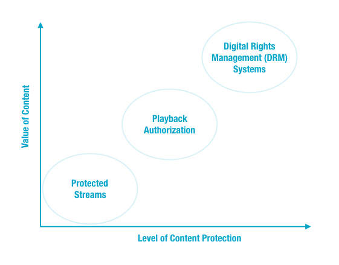

The types of content protection available today can be categorized into three
groups.
Content protection can be imagined along two axes: the value of the content and the level of
protection.

Thus, in increasing protection, the technology options for protecting your content with
Ooyala are:
- Protected streams
- Playback authorization, including token-based authentication
- Digital Rights Management (DRM) systems
Protected streams
There are several technologies that secure the actual stream of data to your customers.
Streaming protocols in general have encryption or other protections designed into them. See
the details in Protected Streams. To
implement these protections, you do not need to do anything. Ooyala provides this
protection.
Limits on concurrent streams are another form of stream-level protection. See more details in
Limits on Concurrent Streams.
Playback Authorization
Playback authorization (a general term to cover various technologies) can be an additional
security layer on top of protected streaming. Among these technologies are:
- Token-based authentication. Required for RTMPE and ensures that encrypted content cannot
be downloaded until the client has been verified and prevents content from being played in
a non-Ooyala player. There are several kinds of token-based systems:
- User-authentication tokens, like the Ooyala Playback Token detailed in Ooyala Player Token for Player V3 (Deprecated).
- CDN tokens, like Akamai Token-based Authentication. See Akamai Secure Token.
- Distribution systems, like Widevine. See Widevine Modular Content Protection.
- Adobe Pass. See Integrating Adobe Pass with Ooyala Player.
Digital Rights Management (DRM) systems
Although there are many different DRM systems on the market, in general they all:
- Provide the highest level of protection
- Include sophisticated tamper-resistance
- Can be circumvented only by highly-skilled hackers with custom tools
For more details on various options, see Digital Rights Management (DRM) Systems
Access Control
- Publishing rules for restrictions on playback by geographic location, Internet domain,
anonymous proxy controls, and more. Ooyala's publishing rules are detailed in Publishing Rules.